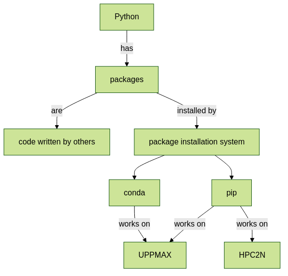

Packages
practice to determine the version of a Python package
practice to determine that a Python package is not installed
practice to have loaded a Python machine learning module
practice to install a Python package
Teaching goals are:
Learners have determined the version of a Python package
Learners have determined that a Python package is not installed
Learners have loaded a Python machine learning module
Learners have installed a Python package
Lesson plan (45 minutes in total):
- 5 mins: prior knowledge
What are Python packages?
Why use Python packages?
How to find out if a package is already installed?
What are some Python package installers?
What are the differences?
What are some Python package installers used on UPPMAX?
What are some Python package installers used on HPC2N?
5 mins: presentation
20 mins: challenge
- 5 mins: feedback
What are Python packages?
Why use Python packages?
How to find out if a package is already installed?
What are some Python package installers?
What are the differences?
What are some Python package installers used on UPPMAX?
What are some Python package installers used on HPC2N?
Compute allocations in this workshop
Rackham:
naiss2024-22-1202Kebnekaise:
hpc2n2024-114
Storage space for this workshop
Rackham:
/proj/r-py-jl-m-rackhamKebnekaise:
/proj/nobackup/r-py-jl-m
Introduction
Packages are pieces of Python code written to be used by others. When possible, using an existing Python package is usually smarter than writing code yourself. In this session, we practice working with packages.
Finding packages
![flowchart TD
using_python_packages[Using Python packages]
installed_with_python[Installed with Python module?]
use_python[Load Python module]
installed_with_module[Installed with Python package module?]
use_module[Load Python package module]
install_yourself[Install it yourself]
using_python_packages --> installed_with_python
installed_with_python -->|yes|use_python
installed_with_python -->|no|installed_with_module
installed_with_module -->|yes|use_module
installed_with_module -->|no|install_yourself](../_images/mermaid-ebb38ce9939e71d6befd7979d523098b6e9afd93.png)
The most common Python packages come installed when loading a regular Python module. Some of the more complex packages, are part of a module for more complex Python packages. If a package is not installed, however, you can also install it.
Python package installers
There are two Python package installers, called conda and pip.
In this session, we use pip, as it can be used on
the two HPC clusters used in this course:
Package installer |
HPC2N |
UPPMAX (Rackham) |
UPPMAX (Bianca) |
|---|---|---|---|
|
Unsupported [1] |
Recommended |
Recommended |
|
Recommended |
Supported |
Unsupported [2] |
[2]Bianca has no internet
In this session we use pip,
because it is a commonly-used package installation system
that works on both HPC clusters used in this course.
We have not scheduled to discuss Conda in this course, yet teaching materials can be found at Conda at UPPMAX.
As a first impression, here is a simple comparison between the two:
Parameter |
|
|
|---|---|---|
Installs Python packages |
Yes |
Yes |
Installs non-Python software |
Yes |
No |
In this session, we will install packages to your default user folder. Because this one default user folder, installing a different version of one package for one computational experiment, may have consequences for others. These problems are addressed in the session on isolated environments.
Exercises
These exercises follow a common user journey, for a user that needs to use a certain Python packages:
In exercise 1, we determine if a Python package is already installed
In exercise 2, we determine if a machine learning Python package is already installed
If all fails, in exercise 3, we install a Python package ourselves
Like any user, we’ll try to be autonomous and read the -hopefully well written!- UPPMAX documentation.
Exercise 1
Learning objectives
Practice reading documentation
Apply/rehearse the documentation to load a module
Apply the documentation to show if a Python package is already installed
Observe how it looks like when a package is not installed
Imagine you want to use the Python packages pandas and tensorflow-cpu and mhcnuggets.
Here we see that one comes already installed with the module system.
Read the UPPMAX documentation on how to load Python.
Then do:
HPC2N: load the modules
GCC/12.3.0andPython 3.11.3UPPMAX: load the module
python/3.11.8
Do:
module load GCC/12.3.0 Python/3.11.3
Do:
module load python/3.11.8
Read the UPPMAX documentation on how to determine if a Python package comes with your Python module.
Is the Python package pandas installed? If yes, which version?
Do:
pip list
So for HPC2N you need to load pandas as a separate module or as part of SciPy-bundle.
Do:
pip list
Then among the list one can find: pandas 2.2.0
So, yes, the Python package ``pandas``version 2.2.0 is installed!
Is the Python package tensorflow-cpu installed? If yes, which version?
Do:
pip list
Do:
pip list
In the list, one cannot find tensorflow-cpu.
So, no, the Python package tensorflow-cpu is not installed.
Is the Python package mhcnuggets installed? If yes, which version?
Do:
pip list
Do:
pip list
In the list, one cannot find mhcnuggets.
So, no, the Python package mhcnuggets is not installed.
Exercise 2
Learning objectives
Practice reading documentation
Rehearse the documentation to load a Python machine learning module
Apply the documentation to show if a Python package is already installed
Observe how it looks like when a package is not installed
Imagine you want to use the Python packages pandas and tensorflow-cpu and mhcnuggets.
Here we see that two come already installed with a Python machine learning module.
Read:
HPC2N: the HPC2N documentation on Tensorflow <https://www.hpc2n.umu.se/resources/software/tensorflow>
Do:
UPPMAX: Which of the versions should you use? Load the latest Python machine learning module for that version.
HPC2N: Load the latest module
UNTESTED
TensorFlow for CPU is installed as a module that is compatible with Python/3.11.3. The relevant TensorFlow version is 2.13.0.
Find the latest module:
module spider tensorflow
Load the latest module with placeholder version 2.13.0 which is compatible with Python 3.11.3. Note that there are prerequisites
module load GCC/12.3.0 OpenMPI/4.1.5 TensorFlow/2.13.0
Rackham only has CPUs, hence you will need to load the cpu module:
Do:
module load python_ML_packages/3.11.8-cpu
Read the UPPMAX documentation on how to determine if a Python package comes with your Python module.
Is the Python package pandas installed? If yes, which version?
Do:
pip list
You need to load SciPy-bundle with prerequisites. Here for the one that is compatible with Python 3.11.3
ml GCC/12.3.0 SciPy-bundle/2023.07
If you do pip list now you will see that pandas/2.0.3 is available.
Do:
pip list
Then among the list one can find: pandas 2.2.0
So, yes, the Python package ``pandas``version 2.2.0 is installed!
Answer:
HPC2N: Is the Python package
tensorflow-cpuinstalled? If yes, which version?UPPMAX: Is the Python package
tensorflow-cpuinstalled? If yes, which version?
UNTESTED
Do:
pip list
Do:
pip list
In the list, one can find tensorflow-cpu, with version 2.15.0.post1.
So, yes, the Python package tensorflow-cpu is installed.
Is the Python package mhcnuggets installed? If yes, which version?
Do:
pip list
Do:
pip list
In the list, one cannot find mhcnuggets.
So, no, the Python package mhcnuggets is not installed.
Exercise 3
Learning objectives
Practice reading documentation
Install a new package.
Rehearse determining if a Python package is already installed
Imagine you want to use the Python packages pandas and tensorflow-cpu and mhcnuggets.
Even when loading a bigger module, one of the packages was not installed for us.
Here we install a Python package ourselves.
Read the UPPMAX documentation on how to install Python packages using pip.
We will be using the first install with --user.
In which folder do the Python packages end up?
Try to come up with a reason why would this be important to know.
When using --user, your Python packages end up in the .local folder.
This can be important, because it will always be present.
That is, it is not part of an isolated environment.
If you, for example, work in an ‘isolated’ environment and
run into problems with Python package versions that are not part of it,
it is probably those packages in your .local folder.
This can be solved by removing that .local folder.
Note that on UPPMAX, one can omit the --user flag,
as it is added automatically, as is shown in a warning.
Install the package mhcnuggets.
Do:
pip install --user mhcnuggets
Confirm that the Python package mhcnuggets is installed now.
Which version has been installed?
Do:
pip list
In the list, one can find mhcnuggets, with version 2.4.1
So, yes, the Python package mhcnuggets is now installed!
Conclusion
Keypoints
You have:
determined if a Python package is installed yes/no using
pipdiscovered some Python package are already installed upon loading a module
installed a Python package using
pip
However, the installed package was put into a shared (as in, not isolated) environment.
Luckily, isolated environments are discussed in this course too :-)